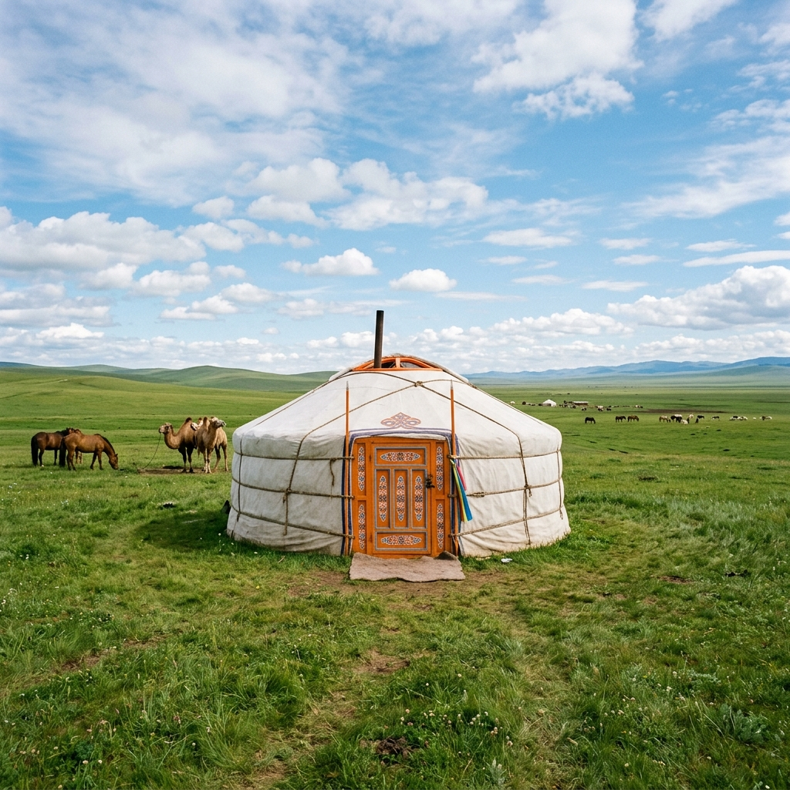
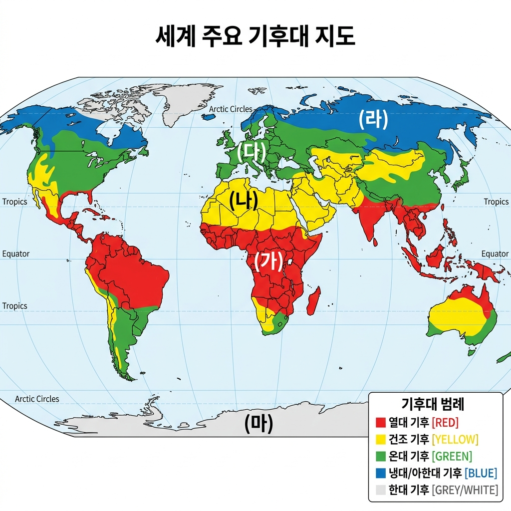
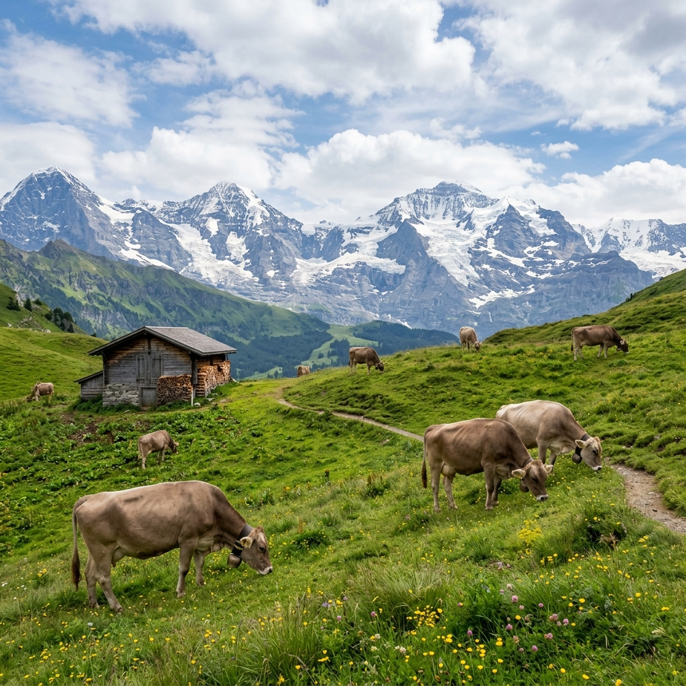
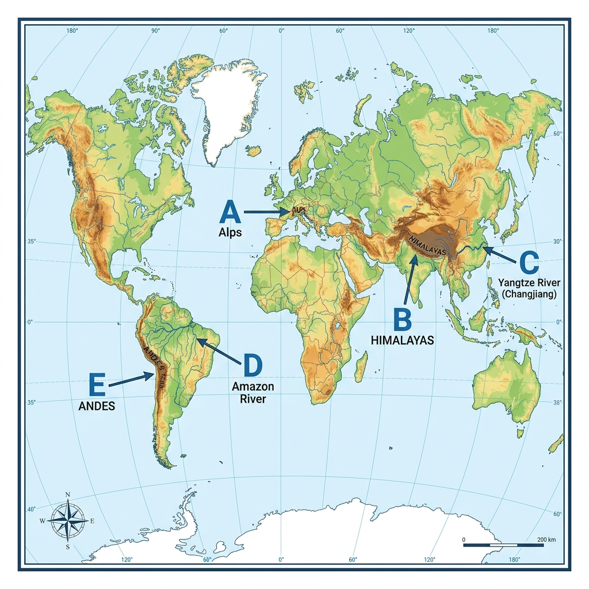

Q1세계의 기후에 대한 설명으로 옳은 것만을 <보기>에서 고른 것은?
ㄱ. 위도와 해발 고도가 높을수록 기온이 높다.
ㄴ. 대체로 기온과 강수량을 기준으로 구분한다.
ㄷ. 열대 기후 지역의 해발 고도가 높은 곳은 사람이 살기에 유리하다.
ㄹ. 저위도에서 고위도로 가면서 한대 기후, 온대 기후, 열대 기후 순으로 나타난다.
Q2사진은 두 지역의 경관을 나타낸 것이다. (가), (나) 지역에 대한 설명으로 옳은 것만을 <보기>에서 고른 것은? (단, (가), (나)는 각각 몽골, 싱가포르에 위치함.)

(가) 이동식 가옥 게르ㄱ. (가)는 (나)보다 연 강수량이 많다.
ㄴ. (가)는 (나)보다 적도와의 최단 거리가 가깝다.
ㄷ. (나)는 (가)보다 연평균 기온이 높다.
ㄹ. (나)는 (가)보다 기온의 연교차가 작다.
Q3지도는 세계의 기후 지역을 나타낸 것이다. 물음에 답하시오.

[문제] 지도의 (가)~(다) 기후 지역에 대한 설명으로 옳은 것은?
Q4지도의 (라), (마) 기후 지역의 주민 생활 모습을 <보기>에서 골라 알맞게 짝지은 것은?
 ㄱ. 순록 유목
ㄱ. 순록 유목
 ㄴ. 통나무집
ㄴ. 통나무집
 ㄷ. 벼농사
ㄷ. 벼농사
(라) 기후 / (마) 기후
Q5그래프는 세 지역의 기온과 강수량 특성을 나타낸 것이다. (가)~(다) 지역에 대한 설명으로 옳은 것은?
Q6다음 글을 읽고 ㉠~㉢에 들어갈 내용으로 옳은 것은?
세계에는 지표면의 경사에 따라 다양한 지형이 나타난다. ㉠은/는 해발 고도가 높고 대체로 경사가 급하다. 이에 비해 ㉡은/는 큰 강의 주변에 주로 발달하며 경사가 매우 완만하다. 한편, 육지와 바다가 만나는 곳을 ㉢(이)라고 하는데, 이 지역의 주민들은 전통적으로 어업에 종사하며 살아왔다. ㉢지형 중 우리나라의 서해안에는 세계적으로 유명한 ㉣(이/가) 형성되어 있는데, 이곳은 염전이나 양식장으로 이용되기도 한다.
㉠ / ㉡ / ㉢
Q7다음 글을 읽고 ㉠~㉢에 대한 설명으로 옳은 것만을 <보기>에서 고른 것은?
세계에는 지표면의 경사에 따라 다양한 지형이 나타난다. ㉠(산지)은/는 해발 고도가 높고 대체로 경사가 급하다. 이에 비해 ㉡(평야)은/는 큰 강의 주변에 주로 발달하며 경사가 매우 완만하다. 한편, 육지와 바다가 만나는 곳을 ㉢(해안)(이)라고 하는데, 이 지역의 주민들은 전통적으로 어업에 종사하며 살아왔다...
ㄱ. ㉠은 ㉡보다 사람이 살기에 유리하다.
ㄴ. ㉡은 ㉢보다 벼농사 등의 농경에 유리하다.
ㄷ. ㉠~㉢ 중 주로 ㉠에서 큰 도시가 발달한다.
ㄹ. 강은 대체로 ㉠에서 시작되어 ㉡을 지나 ㉢으로 흘러든다.
Q8사진은 두 산지의 모습을 나타낸 것이다. (가), (나) 지역에 대한 설명으로 옳은 것만을 <보기>에서 고른 것은?
 (가) 안데스 산지의 고산 도시
(가) 안데스 산지의 고산 도시

(나) 알프스 산지의 목축업ㄱ. (가)는 일 년 내내 우리나라의 봄과 같은 날씨가 지속된다.
ㄴ. (나)에서는 주로 겨울철에 산에서 목축이 이루어진다.
ㄷ. (가)는 (나)보다 위도가 낮다.
ㄹ. (나)는 (가)보다 겨울에 인간이 거주하기에 유리하다.
Q9지도에 표시된 A~E 지형에 대한 설명으로 옳지 않은 것은?

Q10다음 자료의 (가), (나) 지역에 대한 설명으로 옳지 않은 것은?
 (가) 온천(아이슬란드)
(가) 온천(아이슬란드)
 (나) 피오르(노르웨이)
(나) 피오르(노르웨이)
🔑 해설 및 정답 피드백
💡 문항 해설
이곳에 문제의 상세 해설이 출력됩니다.
🚫 오답 피하기
- 오답 보기에 대한 설명이 이곳에 출력됩니다.